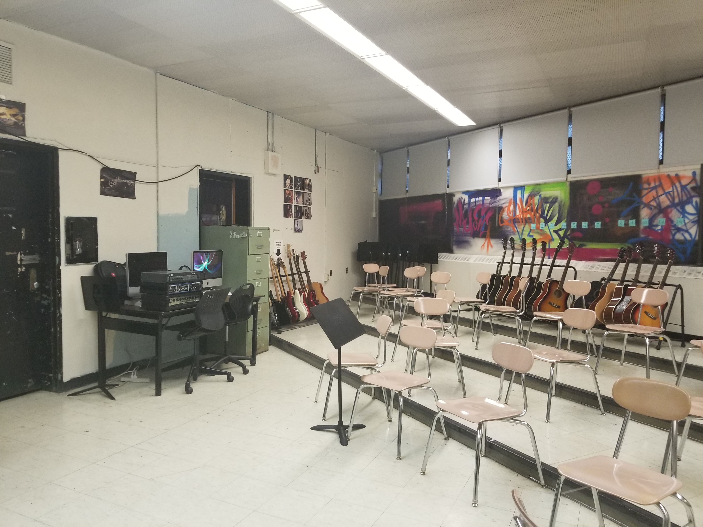
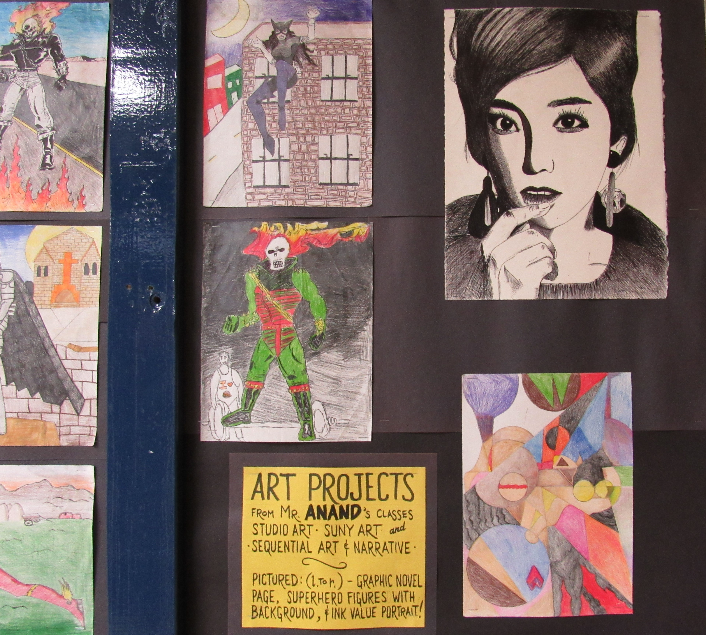
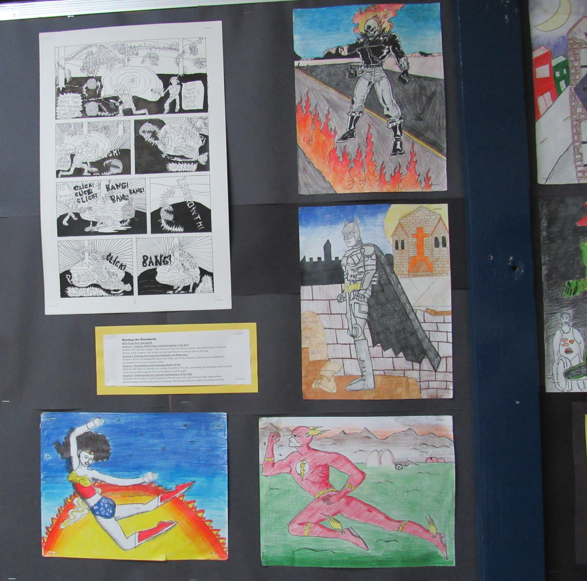
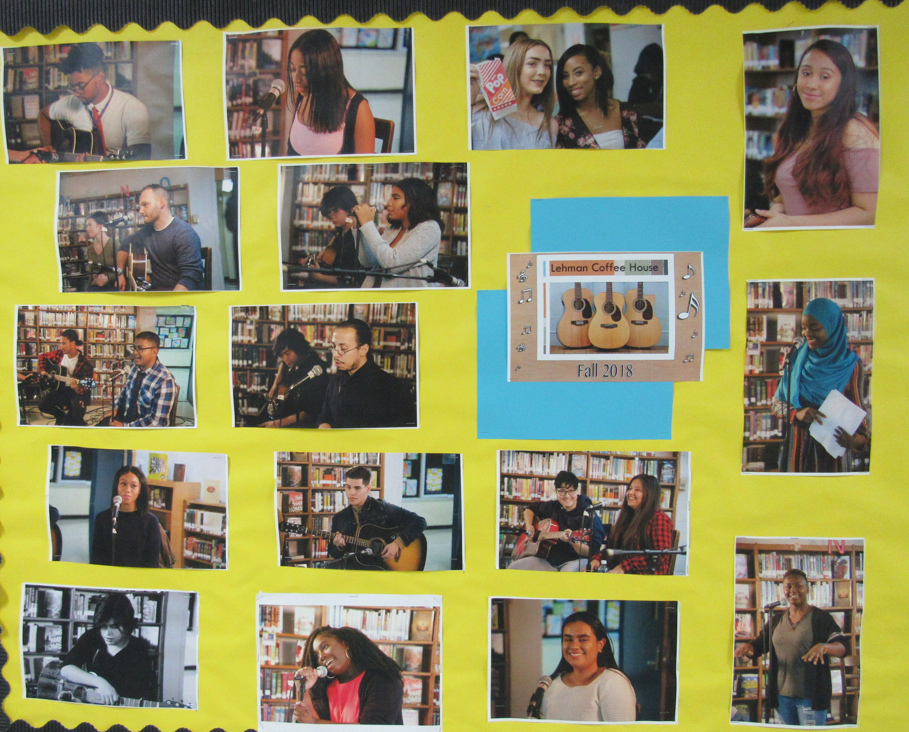
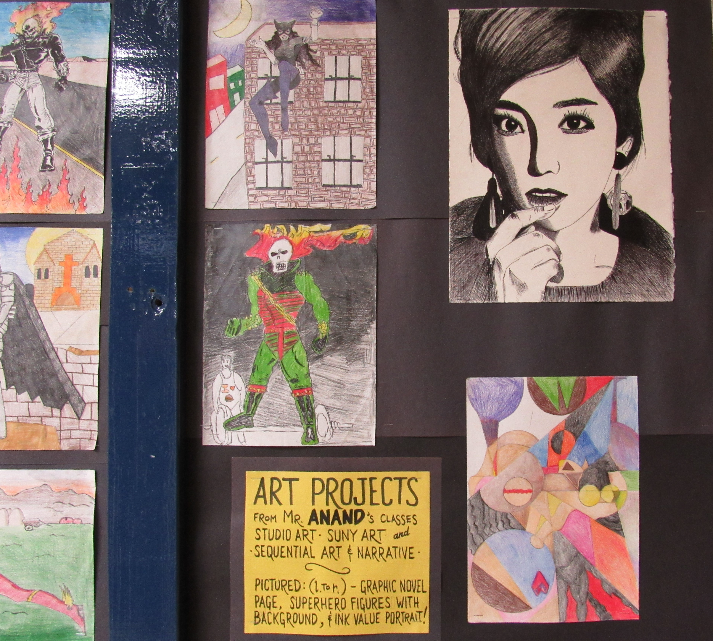
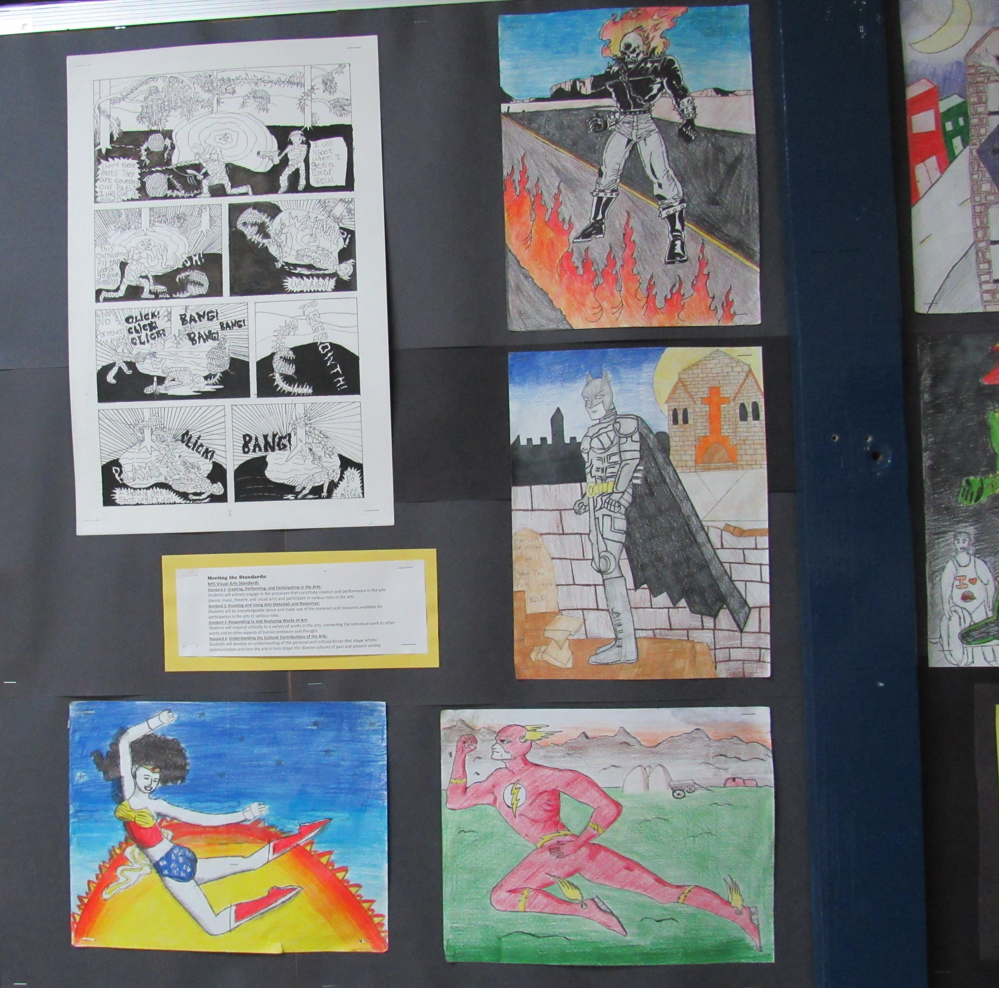
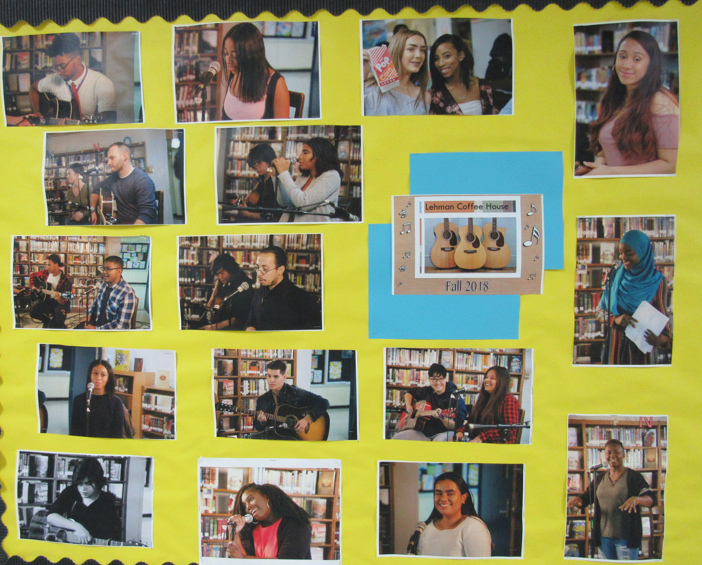
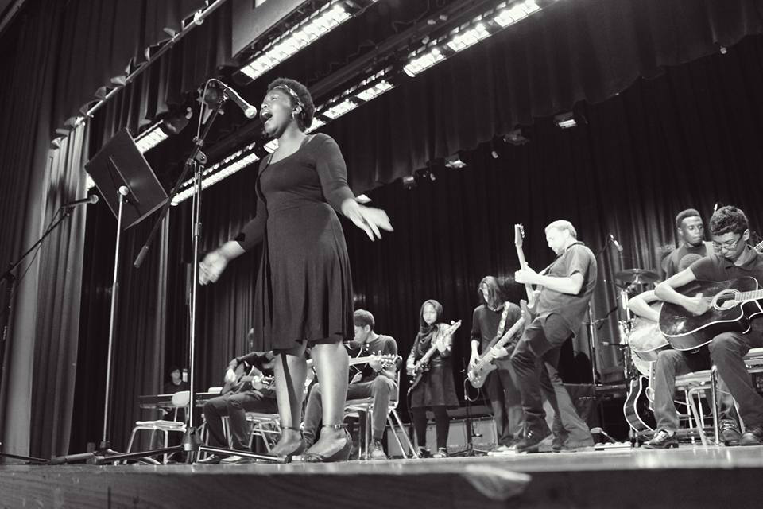

Arts education in our schools are essential to developing our students full potential in that we would be deriving them of their opportunity to contribute to our vastly multi-cultured soceity. If we dont offer them them the opportunity to become inspired to design our next clothes line up, song lists, art murrals and much more.
In a statistical study by the National Center for Education Statistics at the Institute of Education Sciences from 1999-2000 and 2009-10 found that theatre and dance being offered in elementary schools went from 20 percent in 2000 to 4 and 3 percent in 2010. Furthermore in 2010 more than 40 percent of secondary schools course requirements did not have arts as a requirement.
There has to be opportunity for our students to be creative. “Often times the aesthetic part of education is overlooked, the feeling part. We teach students to think, but what about how to feel? I want people to have emotions. If you want a well-rounded education, this deeper learning for every child, then you certainly need to have the opportunity, the options for them to participate in music education and other arts education programs.” - Dr. Earl Franks Executive Director of the National Association for Elementary School Principals (NAESP) April 27, 2018
Location for research: Lehman High School
According to The National Association for Music Education attendance rates of students who have a music program are 93.3% compared to 84.9% who were not offered one in their curriculum.
Arne Duncan, Secretary of education letter to the Schools and Community Leaders in 2009 spoke that “The Elementary and Secondary Education Act defines the arts as a core subject, and the arts play a significant role in children’s development and learning process.I believe that arts are an essential part of education because it helps to develop one’s self through speech, painting, dancing, sculpting, or using instruments. we should all be entitled to be able to express our interests through these forms and numerous others. I agree with this statement and with the guidence of educators we can help express student’s creativeness and world perspective, opening them to have a wider sense of understanding of themselves and the people surrounding them.
Lehman High School Head Music instructor Mr.John Rader has taught music, theory, sound engineering/editing and teamwork to hundreds of students from all skill levels from beginner to advanced for over 10 years.
In an interview with Mr.Rader he provides his personal experience with teaching students music and the impact of arts education on students.
.

With the film and music programs provided at Lehman High School students have the opportunity to work with real editing softwares and recording equipment used in the industry. They are provided with excersises that teach them how to work together on video/audio tracks and build from feedback with one another.
Students learn to value themselves and the culture around them every day thanks to these programs being open to them.
Interview with Film Instructor and former Lehman High School Graduate Mr.Mcsherry.
.

Interview with High School Instructor Mr.Mendez.
"Arts education enables those children from a financially challenged background to have a more level playing field with children who have had those enrichment experiences,'' Eric Cooper, president and founder of the National Urban Alliance for Effective Education
Student created projects
 







You can support arts education by speaking with your local elected officials, volunteer at Department of Education arts events and spread awareness about how our arts programs have a major role in our students education.
I believe that arts are an essential part of education because it helps to develop character through speech, painting, dancing, sculpting, or using instruments. we should all be entitled to be able to express our interests through these forms and numerous others.
Thank you to Lehman High School and faculty for allowing me to take photographs.
By:Mike Buri
To Reference page